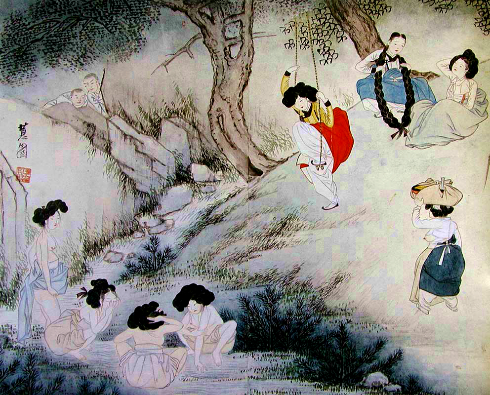
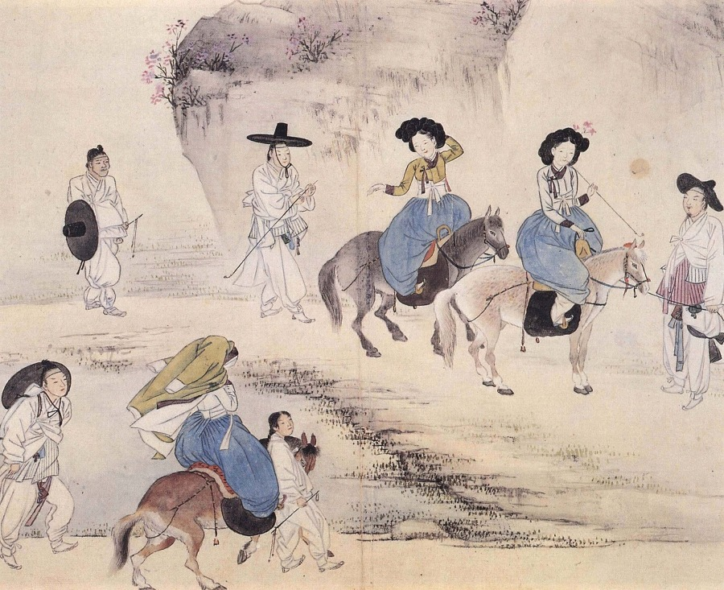
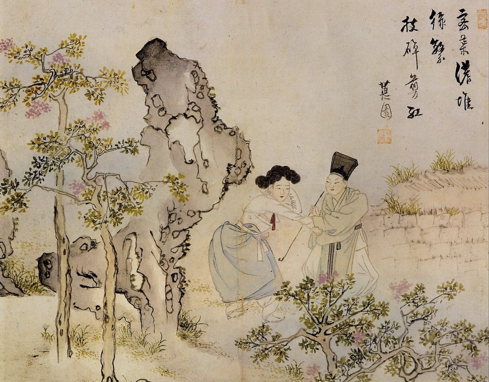
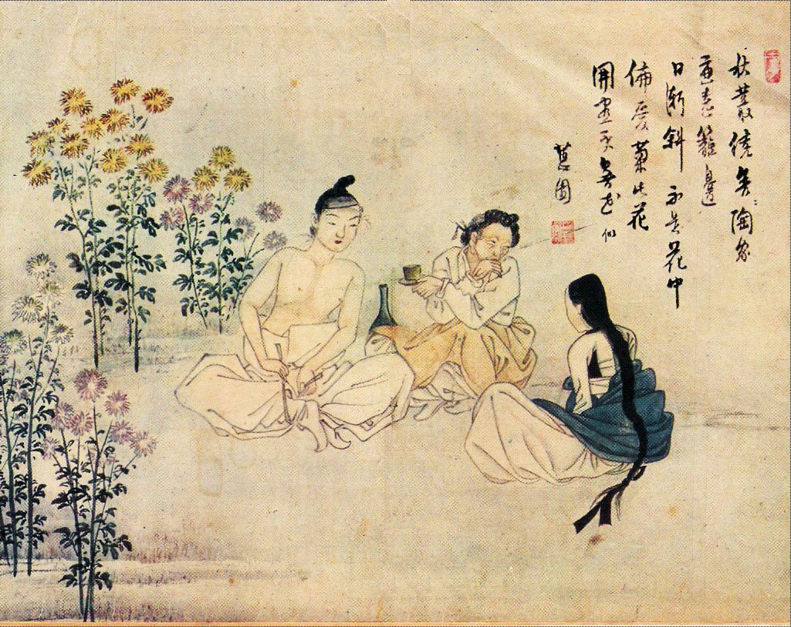
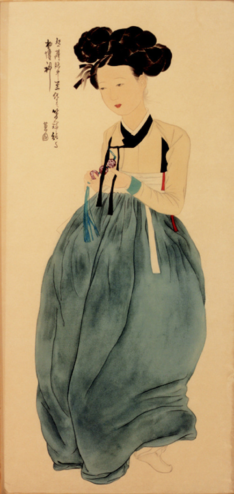

|  |  |
 |

 |
|  |  |
 |

 |
|  | 
 |
 |

간송 미술관에는 간만에 열린 풍속화 전시회로 사람이 북적인다.
그중 가장 큰 관심을 받고 있는 작품은 혜원(蕙園) 신윤복(申潤福)의 <미인도>.
조선의 모나리자라 불리는 이 걸작은 '조선 최고의 여인 초상화'라고
교과서에도 실렸을 정도로 온 국민에게 사랑을 받는 인기작이다.
시향
당신은 바로 그 초상화의 전시회가 열린다는 것을 알자마자 묘한 기분이 들었다.
평소에 미술관 관람을 별로 즐기지 않음에도 불구하고,
'미인도' 전시는 왠지 놓쳐선 안된다는 생각이 들었다.
어쩌면 '미인도'를 두 눈으로 직접 보면, 이 답답한 심정이 무엇인지 알 수 있을 지도 모른다.
<미인도>를 찾아보자.
>관람객 또는 그림을 클릭하면 그림의 정보와 관람객의 대사를 확인할 수 있습니다.